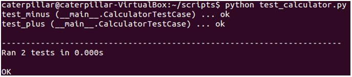
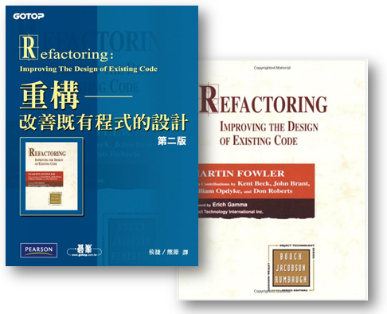
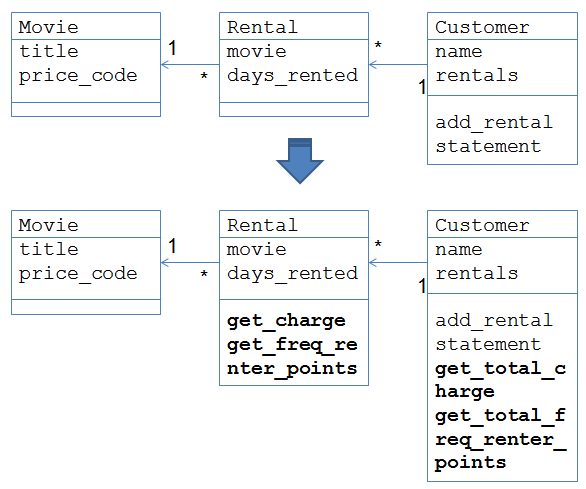

unittest 有時亦稱為 "PyUnit"，是 JUnit 的 Python 語言實現，JUnit是個單元測試（Unit test）框架，單元測試指的是測試一個工作單元（a unit of work）的行為。舉例來說，對於建築橋墩而言，一個螺絲釘、一根鋼筋、一條鋼索甚至一公斤的水泥等，都可謂是一個工作單元，驗證這些工作單元行為或功能 （硬度、張力等）是否符合預期，方可確保最後橋墩安全無虞。 測試一個單元，基本上要與其它的單元獨立，否則你會在同時測試兩個單元的正確性，或是兩個單元之間的合作行為。就軟體測試而言，單元測試通常指的是測試某個函式（或方法），你給予該函式某些輸入，預期該函式會產生某種輸出，例如傳回預期的值、產生預期的檔案、新增預期的資料等。
unittest 模組主要包括四個部份：
- 測試案例（Test case）測試的最小單元。
- 測試設備（Test fixture）執行一或多個測試前必要的預備資源，以及相關的清除資源動作。
- 測試套件（Test suite）一組測試案例、測試套件或者是兩者的組合。
- 測試執行器（Test runner）負責執行測試並提供測試結果的元件。
測試案例
對於測試案例的撰寫，unittest 模組提供了一個基礎類別 TestCase，你可以繼承它來建立新的測試案例。例如：
import unittest
import calculator
class CalculatorTestCase(unittest.TestCase):
def setUp(self):
self.args = (3, 2)
def tearDown(self):
self.args = None
def test_plus(self):
expected = 5;
result = calculator.plus(*self.args);
self.assertEquals(expected, result);
def test_minus(self):
expected = 1;
result = calculator.minus(*self.args);
self.assertEquals(expected, result);每個測試必須定義在一個 test 名稱為開頭的方法中，一個
TestCase 的子類別，通常用來為某個類別或模組的單元方法或函式定義測試。
測試設備
許多單元測試經常藬用相同的測試設備，你可以在TestCase 的子類別中定義 setUp 與 tearDown 方法，測試執行器會在每個測試運行之前執行 setUp 方法，每個測試運行之後執行 tearDown 方法。 一個實際情境可以像是在
setUp 方法中建立新表格並在表格中新增資料，執行測試之後，在 tearDown 方法中刪除表格。
測試套件
根據測試的需求不同，你可能會想要將不同的測試組合在一起，例如，CalculatorTestCase 中可能有數個 test_xxx 方法，而你只想將 test_plus 與 test_minus 組裝為一個測試套件的話，可以如下：
suite = unittest.TestSuite()
suite.addTest(CalculatorTestCase('test_plus'))
suite.addTest(CalculatorTestCase('test_minus'))或者是使用一個
list 來定義要組裝的 test_xxx 方法清單：
tests = ['test_plus', 'test_minus']
suite = unittest.TestSuite(map(CalculatorTestCase, tests))如果想要自動載入某個
TestCase 子類別中所有 test_xxx 方法，可以如下：
unittest.TestLoader().loadTestsFromTestCase(CalculatorTestCase)你可以任意組合測試，例如，將某個測試套件與某個
TestCase 中的 test_xxx 方法組合為另一個測試套件：
suite2 = unittest.TestSuite()
suite2.addTest(suite)
suite2.addTest(OtherTestCase('test_orz'))也可以將許多測試套件再全部組合為另一個測試套件：
suite1 = module1.TheTestSuite()
suite2 = module2.TheTestSuite()
alltests = unittest.TestSuite([suite1, suite2])測試執行器
你可以在程式碼中直接使用TextTestRunner，例如：
suite = (unittest.TestLoader()
.loadTestsFromTestCase(CalculatorTestCase))
unittest.TextTestRunner(verbosity=2).run(suite)或者是透過
unittest.main 函式來執行：
unittest.main(verbosity=2)一個執行的畫面如下：

如果不想透過程式碼定義，也可以在命令列中使用
unittest 模組來運行模組、類別或甚至個別的測試方法：
python -m unittest test_module1 test_module2
python -m unittest test_module.TestClass
python -m unittest test_module.TestClass.test_method如果想得到更詳細的測試資訊，可以加上
-v 引數：
python -m unittest -v test_module想得知
unittest 所有可用的引數，可以使用以下指令：
python -m unittest -h練習 15：重構與單元測試
重構是改造既有程式的過程，對於重構的概念與技巧，可以參考 《Refactoring - Improving the Design of Existing Code》 這本書，中文翻譯為 《重構 — 改善既有程式的設計》，侯捷 老師將 中文版翻譯的前六章開放下載，雖然程式碼示範是使用 Java，不過就重構過程的學習來說，非常值得閱讀：
接下來的練習，就是利用該書一開始的影片出租店範例，不過我將之改成了 Python 版本，在 Lab 檔案的 exercises/exercise15 中，有個 dvdlib.py，就相當於該書第一章一開始的範例程式。
我們要重構的是
Customer 類別中的 statement 方法，流程則是彷造該書 〈1.3 分解並重構 statement〉 的內容，為了確保重構過程中，不會破壞既有程式的功能，我們要使用 unittest 模組來進行單元測試。 重構前後的類別圖是這樣的：

別忘了，你得在每次的重構之前，先寫好測試，重構後執行測試，確保你沒有破壞了什麼，練習的過程中你會發現，因為有測試確保了功能不破壞，你會更有信心進行重構。
（當然，配合版本控制系統的話，會是更好的方式！）